I’ve been itching to do a forecasting post for a while. Time series data is not something I work with often, so I have wanted to practice some basic techniques, but I’ve been lacking an inspiring dataset to work with. But recently I realized I have a perfectly fine dataset ready to go with my cleaned up crime data. With just a little bit of aggregation, I can turn this large ~1m+ row dataset into neatly organized time series counts. The only question is what specifically to examine. Since I have been tossing this idea around for a while, I knew I wanted a couple things for a dataset/problem:
A good amount of data for every segment of the time series. In general, the more data the better.
Must be moderately fine-grained time periods–something along the lines of weekly data would be ideal. I’d like to use this model in a crime prediction application eventually, and I think shorter forecasting horizons tend to be more engaging for that sort of thing. I do think forecasting longer term windows also have a lot of value, so ultimately I will have to see which option is more feasible.
After some exploration, forecasting monthly theft counts seems to fit both criteria. I have a solid 10 year period of data and within those monthly periods there is enough data to generate robust predictions. While initially I wanted to use violent crime data, I found that–thankfully– Louisville doesn’t have enough violent crime to build a robust forecast with the methods I used here. The forecast variability was just too high. Theft, however, is a big problem in the area, so forecasting is something that could provide tangible benefits.
It should be noted that I strongly considered–and in fact did significant forecasting with weekly data, but I was unable to achieve satisfactory results. While my inexperience with forecasting and time series certainly didn’t help(I could definitely see the value in a whole post on how I failed at this weekly forecasting), during my research it became readily apparent how much more difficult forecasting becomes as you shorten the period. Hopefully in the future I’ll have a new post with some more accurate weekly forecasting.
So with a problem now in hand, let’s get to forecasting.
Preparing the dataset
First things first, I need to load in some data. The 2007-2016 data is something I have already prepared and just need to load. For the 2017 data, I can use the same script I used on my old data. I source in that script and use the same data cleaning functions as before to tidy up the new data. It’s always a great feeling when you can reuse old work. If you are interested, you can find that script here.
Code
# Source in the necessary functions from our geocoding scriptsource('louisville_raw_data_and_geocoding.R')# Loading 2017 dataset and preparing it for useseventeen <-data_import_and_clean('Crime_Data_2017_0.csv')# Doing the geocoding prep for consistency, even though I am not # doing the geocoding on new addresses since I am not using# location information here.seventeen_raw <-geocode_prep(seventeen)# Load pre2017 crime dataraw_data <-read_rds("lou_crime_geocoded_df.rds.gzip")# remove lat/lng from raw_data and then bind the two df togetherraw_data <- raw_data%>%select(-lat, -lng)full_raw <-bind_rows(raw_data, seventeen_raw)
With the data loaded, I want to add some time related variables that I think could be useful. It is quite possible that not all of these get used in a final model, but I want to play around with them and see. Specifically, I am adding variables for:
Year_Month
Week of the year
Year_Week
Season
a new Date variable that is class Date
Code
# Creates a number of useful date variables from POSIXct objectcreate_date_variables <-function(df){require(lubridate)# Uses the POSIXct date_occurred variable to create subvariables df$year_month <-paste(df$year, df$month, sep ='-') df$date <-as.Date(df$date_occured) df$week <-week(df$date_occured) df$year_week <-paste(df$year, df$week, sep ='-')return(df)}#create season variable based on 2016 season datesgetSeason <-function(dates){ winter <-as.Date("2016-12-21", format ="%Y-%m-%d") spring <-as.Date("2016-3-20", format ="%Y-%m-%d") summer <-as.Date("2016-6-21", format ="%Y-%m-%d") fall <-as.Date("2016-9-22", format ="%Y-%m-%d") d <-as.Date(strftime(dates, format ="2016-%m-%d"))ifelse(d >= winter | d < spring, "Winter",ifelse(d >= spring & d < summer, "Spring",ifelse(d >= summer & d < fall, "Summer", "Fall")))}crime_lou <-create_date_variables(full_raw)crime_lou$season <-getSeason(crime_lou$date)
Now, after removing records with incorrect/non-Louisville zipcodes, removing pre-2007 records and trimming the data so I end with a full month, I can aggregate our data and transform it into a time series.
Code
# Aggregate function# Takes in # 1) crime : nibrs_code used for filtering# 2) ... : any number of variables to be used for grouping(year, week, month, etc)summarise_data <-function(df, crime , ...){ filter_by <-enquo(crime) group_by <-quos(...) df%>%filter(!!filter_by)%>%group_by(!!!group_by)%>%summarise(count =n())}# Creating vector of nibrs theft codes for filteringtheft_codes <-c(paste0("23", letters[seq(from =1, to =8)]), "240", "280")# aggregating thefts by year and weekthefts_yw <-summarise_data(crime_lou, nibrs_code %in%theft_codes, year, month)# creating time series# going to split into training and testing set straight awaytheft_ts <-ts(thefts_yw$count, frequency =12, start =decimal_date(ymd('2007-01-01')))theft_train <-window(theft_ts, start =decimal_date(ymd('2007-01-01')), end =decimal_date(ymd('2016-12-31')))theft_test <-window(theft_ts, start =decimal_date(ymd('2017-01-01')))
After all this, I am left with the chaotic looking time series below. Just from a passing glance, it’s immediately obvious there is some sort of parabolic looking seasonal pattern within each year. Additionally, it appears that there is a slight upward trend to the data–especially seen in 2016.
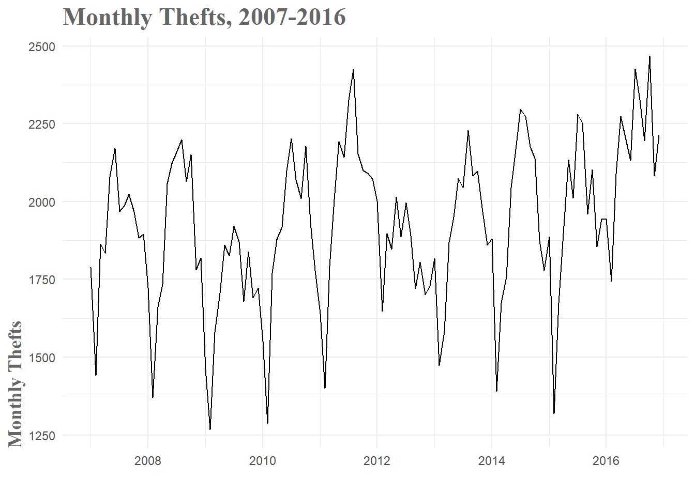
Monthly Thefts Time Series
When you break the data down by year, this ebb and flow pattern becomes a little more clear. The early, winter weeks tend to have relatively low theft numbers and then you see a gradual increase through the spring and summer. After a peak towards the end of summer, thefts gradually drop off through fall and the beginning of winter. The variance you see between the years must be a combination of other factors, but the basic seasonal pattern is consistent over the years and therefore should be informative in our models.
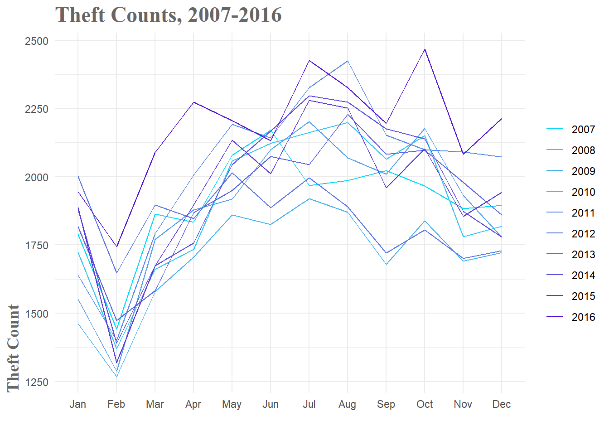
Theft Breakdown by Year
Baseline Models
As with any modeling, you need to have a baseline against which to compare your forecasts. In our case, this can be something as simple as predicting the same number of thefts in January of 2017 as there were in January of 2016–also known as a seasonal naive model. This is actually a fairly common strategy in police departments around the country when they are attempting to forecast crime for resource allocation. We hope that we can do much better than these naive models, but if we can’t, we know to go back to the drawing board.
For the purposes of this exploration, we’ll prepare three naive models. The mean model simply predicts the mean number of thefts for every week in the forecast period. The seasonal naive method, as mentioned above, uses past values as its predictions. And finally, the drift method essentially draws a line from the first data point to the last and uses that lines slope to forecast the time period. For all models in this post, we will use the 2007-2016 data to train the models and then test them against the data from January 2017 - June 2017.
Code
# Train Baseline Modelsfit.mean <-meanf(theft_train, h =6, level =0.95)fit.snaive <-snaive(theft_train, h =6, level =0.95)fit.drift <-rwf(theft_train, h =6, level =0.95, drift =TRUE)# Determine the accuracy of baseline models against my test set# I create acc_df to store all these accuracy metrics for easy presentationmean.acc <-accuracy(fit.mean, theft_test)snaive.acc <-accuracy(fit.snaive, theft_test)drift.acc <-accuracy(fit.drift, theft_test)acc_df <-data.frame(Model =c("Mean", "Seasonal Naive", "Drift"),RMSE =c(mean.acc[2, 2], snaive.acc[2, 2], drift.acc[2, 2]),MAPE =c(mean.acc[2, 5], snaive.acc[2, 5], drift.acc[2, 5]))acc_df
Model
RMSE
MAPE
Mean
195.6968
7.999815
Seasonal Naive
213.4459
9.363634
Drift
256.5670
10.622631
As you can see, the mean model performs best, with a MAPE(Mean Absolute Percentage Error) of 8%. This will be the baseline error rate for our models to beat. As you’ll see, it’s not always easy to beat this metric.
ARIMA Model and Friends
Now that I have a baseline level of performance for comparison, it’s time to generate some slightly more advanced models to see what sort of performance I can squeeze out of our data. This process ended up being quite labor intensive as I ended up generating several dozen models, most of which were not very good. When I started to examine why, it was pretty obvious. The 2017 data doesn’t follow the typical pattern of a large drop in February(partly due to the shortened month) followed by a sharp rise back to ‘normalcy’ in March. No matter how good the model, when the future takes an unexpected turn, performance is going to drop. Part of the challenge in forecasting is working through these changes in your data and figuring out if there were signs you could have observed that would have warned you of these changes.
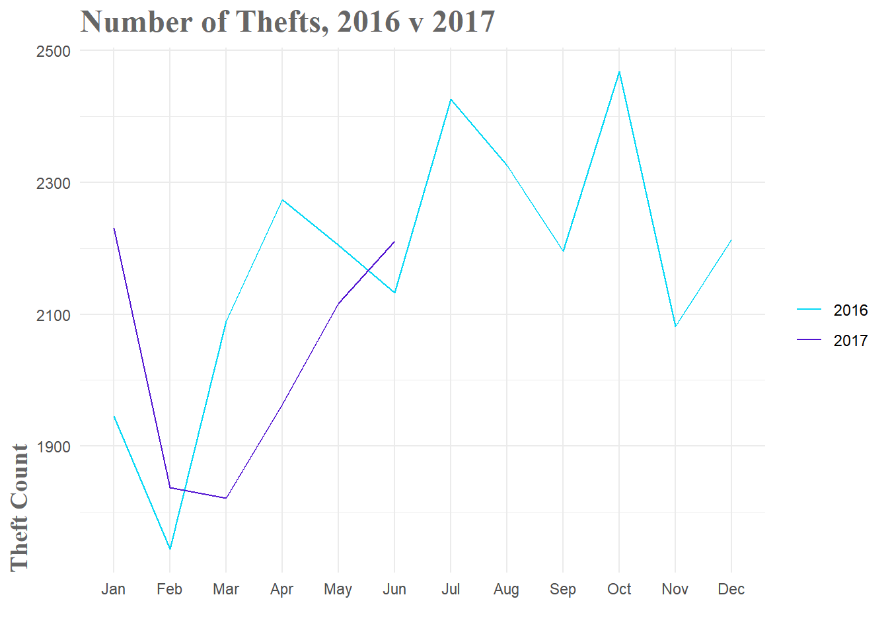
2016 v 2017 Theft Comparison
Linear Model
With that said, the first model that had some success was a simple linear model with both seasonal and trend components. As you can see in both Fig.1 and Fig.2 above, there is a clear seasonal pattern. We rise through the summer months and fall towards winter. This is regular, so it should be a highly informative variable. In our model the seasonal component is basically a set of coefficients that designates what month it is. Since there are 12 months, you need 11 terms to represent to be able to specify all 12 months.
The trend term is just the linear models calculation of the general upward or downward motion of the data. You can get a good visualization of both the seasonal and trend components by decomposing the time series.
Code
plot(stl(theft_train, s.window ='periodic'))
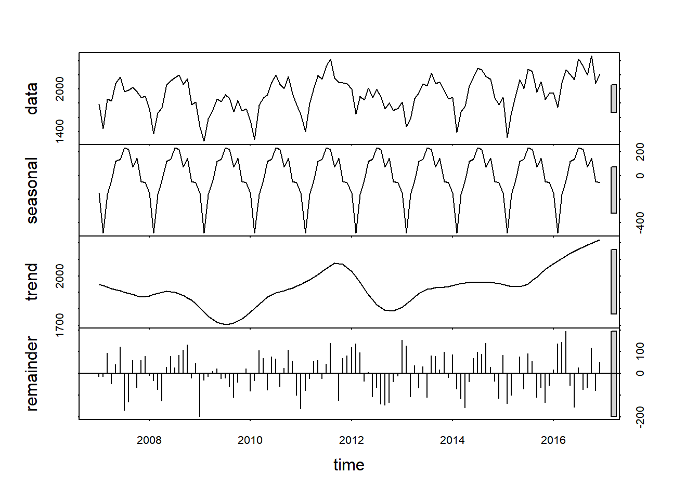
Time Series Decomposition
Fig.4 shows us the original data and then breaks it down into the seasonal, trend and remainder components. I can clearly see both the monthly seasonal pattern and the general upward trend of the number of thefts. Of particular note are the grey bars on the right hand side. Basically, the smaller the bar, the more important the component in explaining the overall data. So in our case, the seasonal component seems to explain more of the variation than the trend component. It should also be noted that the remainder portion (variation in the data that is not explained by the seasonal or trend components) does not appear to be randomly distributed. In fact, if I squint a bit, it almost looks like a sine wave. If this model captured all the available information, I would see randomly distributed remainders. Since this isn’t the case, it is highly likely that there is useful information left that the model is not capturing.
Now the actual fitting of our linear model is quite simple with the forecast package. I simply specify that I want both season and trend components in the model formula. When I plot the resulting fit, I can see that while not perfect, the result seems decent. The general shape of the time series is captured, but the forecast does drastically miss its predictions for the start of 2017. It looks like it was expecting the trend from 2007-2015 to continue, but as you can see from the observed values, in 2016 and 2017 there was significantly less dip at the beginning of the year.
Code
fit.lm <-tslm(theft_train ~ season + trend)fc.lm <-forecast(fit.lm, h =6)
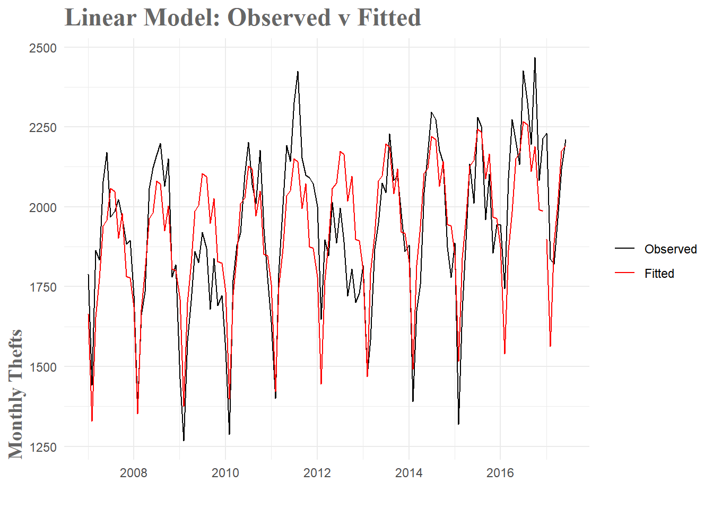
Linear Model Fit
With this model, I have lowered the MAPE by around 22%. This is a pretty sizable increase in accuracy, but it means I am still off by hundreds of thefts per month(when you simplify things greatly).
Model
RMSE
MAPE
Mean
195.6968
7.999815
Seasonal Naive
213.4459
9.363634
Drift
256.5670
10.622631
Linear Model
180.9799
6.562527
A useful diagnostic is checking the correlations of the residuals. If there are noticeable patterns or significant residuals, that is an indication that useful information remains in the residuals.
Code
tsdisplay(fit.lm$residuals, main ="Linear Model Residuals")
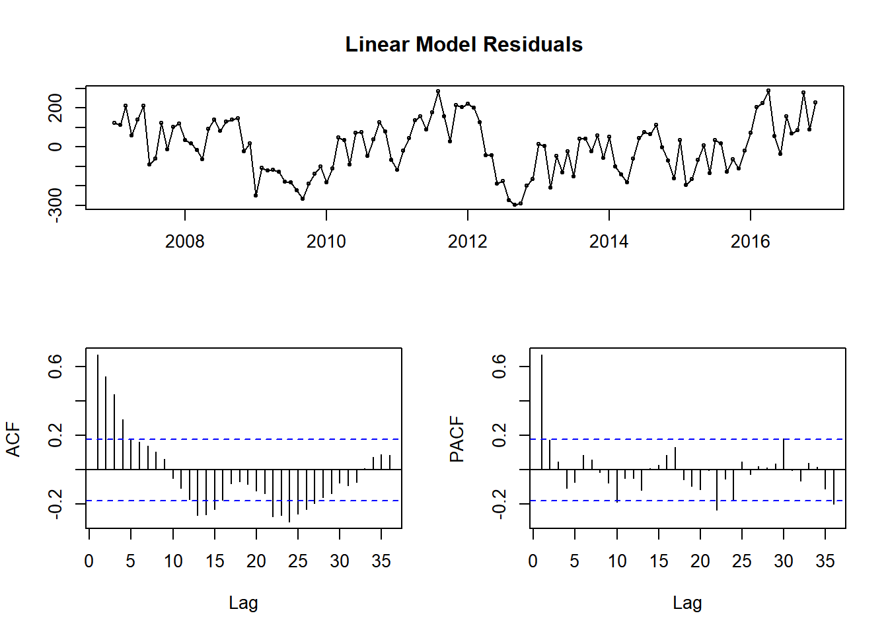
Linear Model Residual Diagnostics
Looking at the top plot of the residuals themselves, portions of it appear random(as it should if we captured all the information) and other parts have clear trends present. This is highlighted again in the Acf and Pacf correlation plots. Essentially, I have dealt with some of the information, but a good amount still remains. Let’s check out an ARIMA model to see if I can do a little better.
ARIMA Model
Model Overview
ARIMA models–or Autoregressive Integrated Moving Average Models– are a staple in forecasting. They tend to handle seasonality quite well and as a bonus, you can create more complex models by adding regressor terms to the model with additional information. In our case, after a good deal of wrangling, an ARIMA model turned out to be quite good.
The first step to fitting an ARIMA model is to check if the time series is stationary. This means you don’t want the data to have any trends or seasonality. You want stationary data because this allows you to model under the assumption that the mean, variance and covariance are constant over time. Since an ARIMA model is essentially a form of regression, this assumption is crucial to obtaining useful forecasts. First, I look at our base time series.
Code
tsdisplay(theft_train, main ="Original Data")
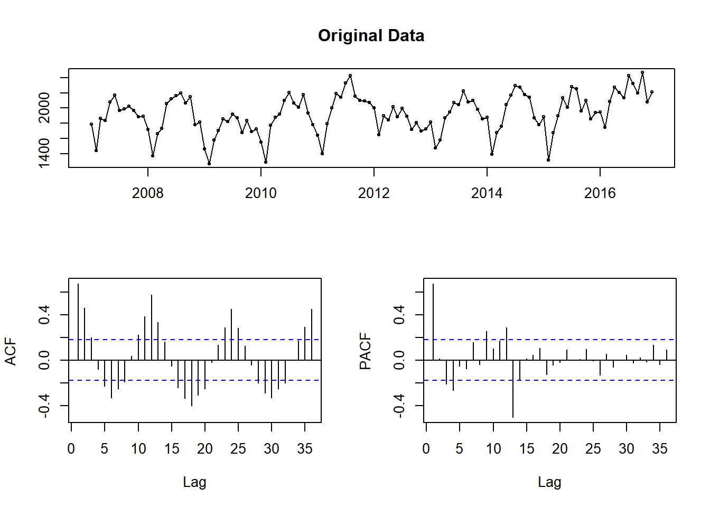
Checking data for stationarity
There is both monthly seasonality and a slight upward trend in the time series. I can easily fix this with some differencing. Instead of looking at the original values of the time series, I compute the difference between observations and use those values instead. Here, I compute differences with a lag of 12 (for monthly seasonality).
Code
tsdisplay(diff(theft_train, 12), main ="Seasonally Differenced Data")
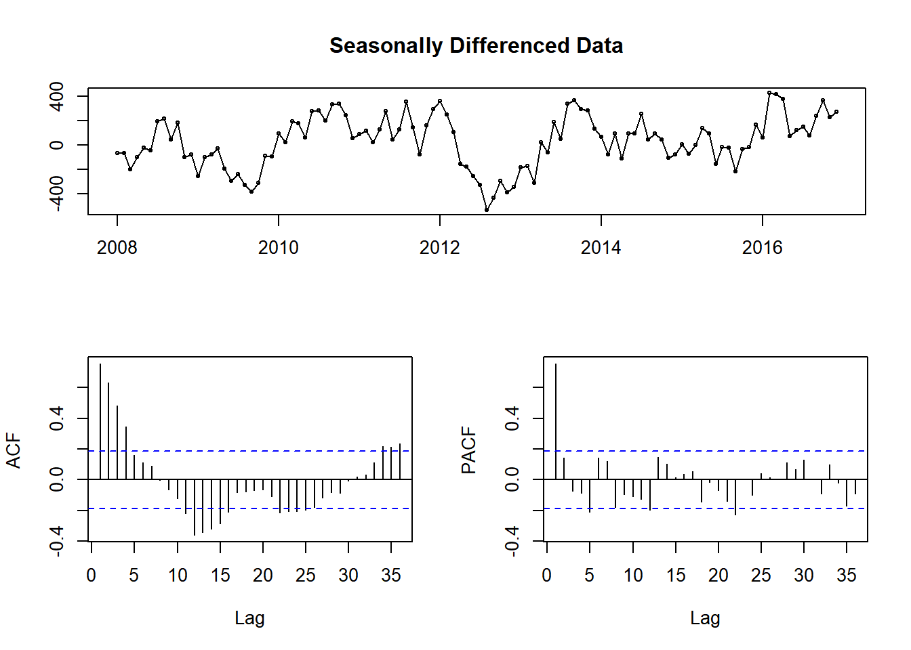
Stationarity check after seasonal differencing
As you can see in Fig.8, the data no longer has any obvious seasonality. While it seems like we could difference once more to eliminate what seems like some trends, this first set of differencing passes the Augmented Dickey-Fuller test for stationarity(large p-values indicate non-stationary data). As is the case with modeling in general, the amount of differencing needed can be a little subjective. I went with the seasonally differenced data since it ended up performing best in the modeling.
Augmented Dickey-Fuller Test
data: diff(theft_train, 12)
Dickey-Fuller = -3.8727, Lag order = 4, p-value = 0.018
alternative hypothesis: stationary
Once you have stationary data, the ARIMA model consists of two basic parts–an AR and a MA set of terms. The autoregressive terms are linear combinations of past values of the variable. You are regressing the data against past versions of itself rather than some outside variable. More formally, the autogressive model goes as follows
where \({e}_{t}\) is again a noise term. When viewed this way, \({y}_{t}\) is best thought of as a moving average of the last couple of forecasting errors. So a moving average model is in some sense regressing over our previous forecast errors to give us an idea of how good the forecast is.
You combine the AR and MA components to form the intimidating looking full ARIMA model.
The main difference here is that the \({y'}\) terms are the differenced series we calculated above rather than the original one. You specify this model by saying it’s an ARIMA(p, d, q) model where
\({p}\) = the order(or number of terms) of the autoregressive part
\({d}\) = the degree of differencing involved
\({q}\) = the order of the moving average component
Since we have already seen that we have significant seasonality in our data, a seasonal ARIMA model is more appropriate. You specify this model in a similar manner – ARIMA(p, d, q)(P, D, Q)– where the second bracket contains the same information as above, but for the seasonal component. Behind the scenes, R will take this model and estimate our parameters using maximum likelihood estimation(MLE).
This is all a vast simplification of the entire process, but a more in depth discussion is beyond the scope of this post. For a great in depth discussion of what this model involves you can look here.
Determining Model Orders
The hardest part of fitting an ARIMA model was definitely figuring out the order needed to best fit the data. There are a lot of guides out there, but the general idea is to add terms until you aren’t seeing significant correlation in the Acf or Pacf plots. You might not be able to remove all significant peaks, but you should try to minimize the number as best you can.
So first I fit a model just with the seasonal differencing applied.
Code
fitting.frame <-Arima(theft_train, order =c(0, 0, 0), seasonal =c(0,1,0))tsdisplay(fitting.frame$residuals, main ='Seasonally Differenced Residuals')
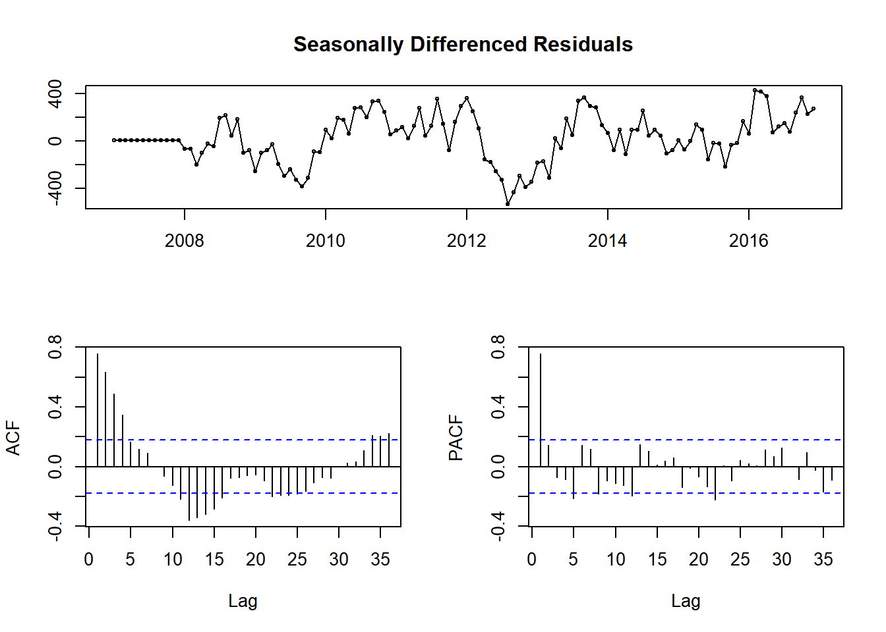
Residuals of ARIMA model with seasonal differencing term
In Fig.9 you see a lot of significant peaks in both the Acf and Pacf plots, as well as what appears to be seasonal peaks at 12 and 24 months on the Pacf plot. Those seasonal peaks lead me to believe 2 seasonal MA terms might be appropriate.
Code
fitting.frame2 <-Arima(theft_train, order =c(0, 0, 0), seasonal =c(0,1, 2))tsdisplay(fitting.frame2$residuals, main ='Diff + Seasonal MA Residuals')
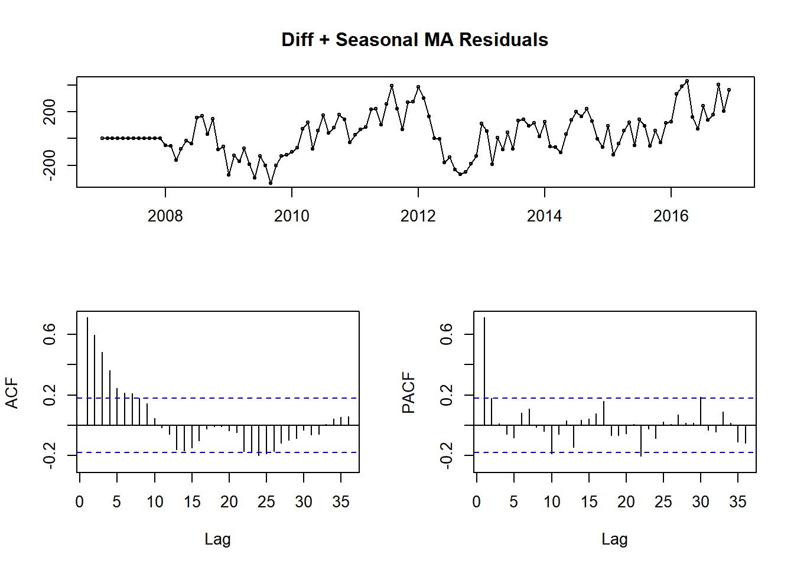
ARIMA(0,0,0)(0,1,2) Residuals
In Fig.10, you see the result of those two seasonal MA terms. I have removed the seasonal peaks at 12 and 24, but there are still large peaks at 1 on both plots, so some sort of AR terms are needed.
Code
fitting.frame3 <-Arima(theft_train, order =c(1, 0, 0), seasonal =c(1, 1, 2))tsdisplay(fitting.frame3$residuals, main ='Diff + Seasonal MA + AR Residuals')
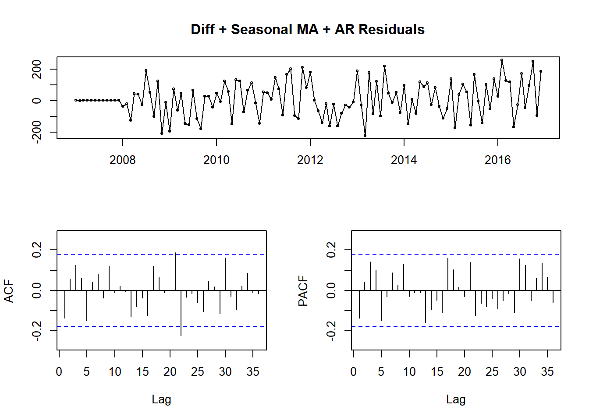
ARIMA(1,0,0)(1, 1, 2) Residuals
Again, there is clear improvement. Fig.11 shows very little seasonality, but there are still significant peaks. It won’t always be possible to remove all significant peaks, but I wanted to push the model to its limit before giving up. From this point it was more trial and error than an exact science. I went through and progressively added more nonseasonal MA terms until I minimized the MAPE of the model.
Code
fit.arima <-Arima(theft_train, order =c(1, 0, 17), seasonal =c(1, 1, 2))tsdisplay(fit.arima$residuals, main ='Final ARIMA Model Residuals')
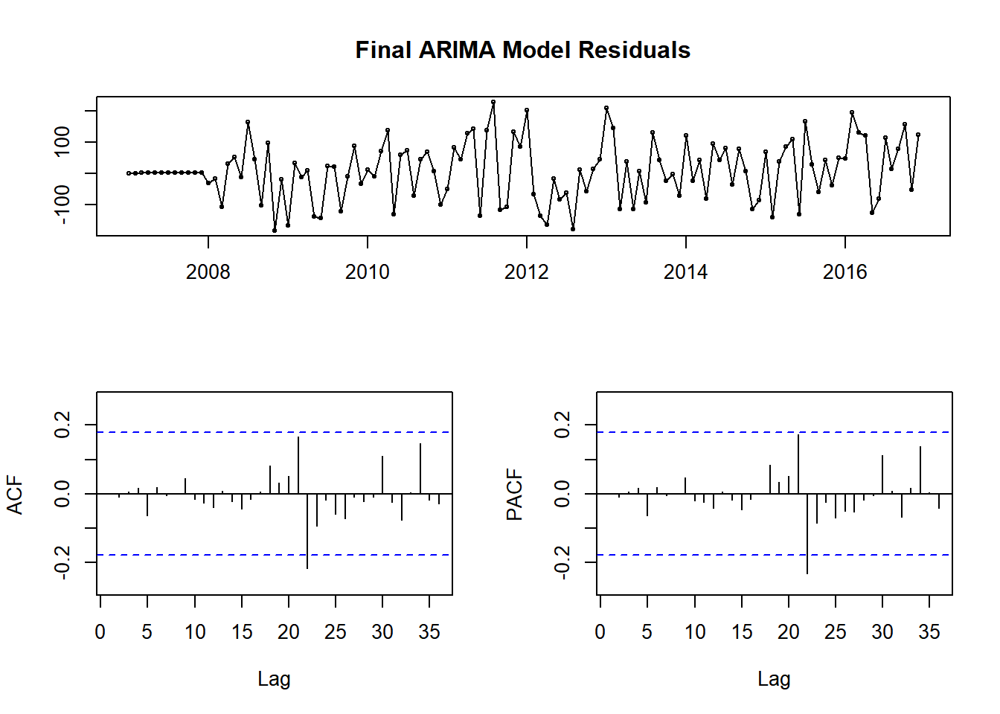
Final ARIMA(1, 0, 17)(1, 1, 2) Model Residuals
Model
RMSE
MAPE
Mean
195.69679
7.999815
Seasonal Naive
213.44593
9.363634
Drift
256.56699
10.622631
Linear Model
180.97986
6.562527
Baseline Arima
213.44593
9.363634
ARIMA 2
220.80364
7.823240
ARIMA 3
118.86439
5.690724
Final ARIMA
95.00279
4.386498
In the final model, there are still significant peaks at 21 and 22, but removing these with more terms resulted in lower model accuracy. The final model beat our best baseline model by about 83%. Looking at the fitted values, they tend to capture the amplitude of the peaks and valleys a little better. I’m still missing the dips in 2016 and 2017, but given how far from the norm that portion of the data is I’m not sure I can capture it with a purely time series based model. While this is by no means a great model, I’m generally accurate to within a hundred crimes or so. Not too bad for a first attempt.
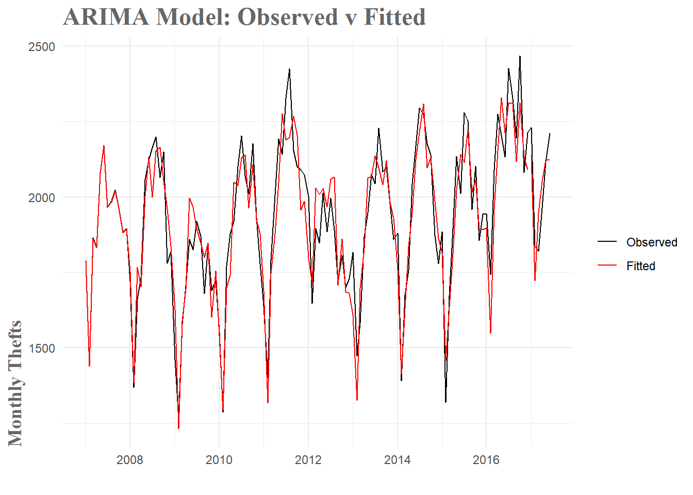
ARIMA Model Fit
Conclusion
Overall, I am pretty happy with how this model turned out. There are significant restrictions to approaching this forecasting problem with only temporal data. In the real world, whether a crime is committed is not solely determined by the time of day/month/year. By restricting the forecast to this sort of data, we are missing out on all sorts of spatial, weather, crowd-behavior and a whole host of other effects which certainly play a part in the rate of crime. To achieve an 80+% error rate reduction over mean value forecasting–or an 110+% reduction over seasonal naive forecasting which is commonly used in real police departments– is pretty satisfying. With that said, I’d be remiss if I didn’t acknowledge the possibility that this model is overfit to the data. I tinkered extensively with the number of terms to add to the model and ended up with 22 in total. I think it is quite probable that this resulted in overfitting. The good news is that I was able to achieve similar levels of performance with about half the terms. I think a simpler model would generalize better to future datasets, but at this point that is just speculation.
This project ended up being significantly more challenging that I anticipated. In the future I am going to try and writeup my initial approach to weekly forecasting which just never panned out. I was unable to handle the amount of variability in that sort of time series and I don’t think I was approaching the forecasting quite right. Hopefully, after some more research I can try to tackle that again. I do think I learned a significant amount of practical knowledge that will transfer to future modeling projects, so even with that set back, I don’t think all this was in vain. Eventually I am going to incorporate this model into an app of sorts, though I am undecided whether it will be this exact model or perhaps a retooled weekly version.
To sum it all up, I really enjoyed learning some of these forecasting methods. In a world where predictive analytics is more and more common, I don’t think this sort of knowledge will go unused. With respect to the crime forecasting problem specifically, I have a bunch of exciting ideas I’d like to try in the future. A particularly exciting area is the use of Gaussian Processes to predict crimes. While significantly more advanced, this approach has the tremendous advantage of being able to incorporate both spatial and temporal data. In terms of useful predictive forecasts, this is a clear step up. Now it’s just a matter of learning how to implement it.